Effortlessly manage Post-Dated Cheques (PDC) for customers and vendors while staying compliant with accounting best practices.
◦ Customer cheques can be registered directly from Customer Invoices, linking the cheque to
the transaction for seamless tracking.
◦ Vendor cheques can be registered directly from Vendor Bills, ensuring payments are
accurately recorded.
◦ Both customer and vendor cheques are automatically reconciled with invoices or bills.
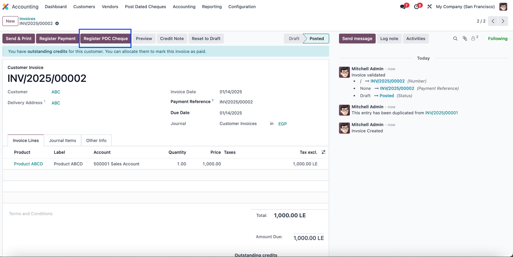
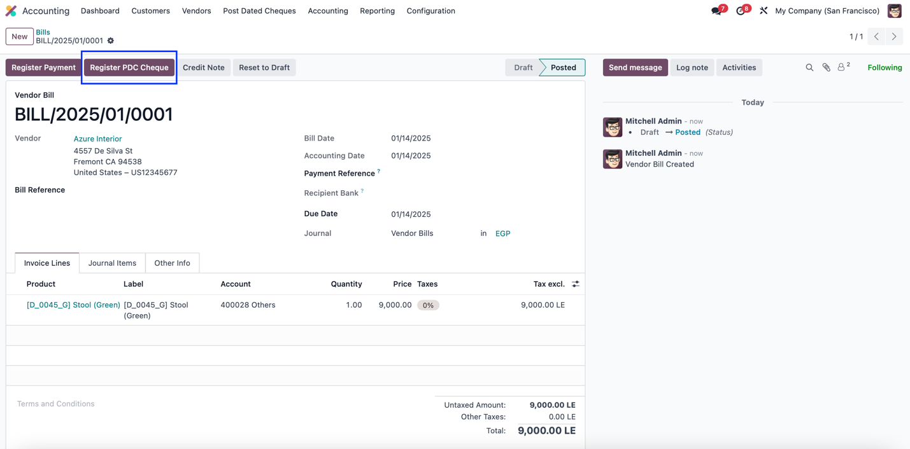
◦ Track every stage of cheque processing, including statuses like Registered, Deposited,
Bounced, Returned, Collected, or
Cancelled.
◦ Fully interactive tracking views for seamless cheque management.
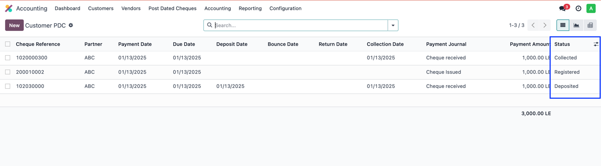
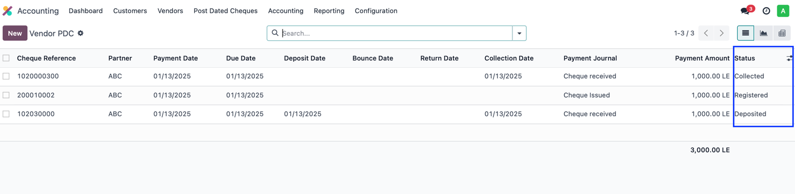
◦ This feature automates the creation of multiple cheques, saving time and reducing errors.
How It Works:
◦ Enter the total payment amount, number of cheques,
intervals (e.g., monthly),
and the starting cheque number.
◦ The app automatically calculates cheque amounts, assigns due dates, and generates cheques
instantly.
Example: A real estate developer receives $120,000 from a
customer to be paid over
12 monthly installments. Instead of manually creating 12 cheques:
1. Enter $120,000, set 12 cheques, and choose a monthly
interval.
2. The app automatically generates 12 cheques of $10,000 each with due
dates and sequential numbering.
This feature is ideal for managing high-volume transactions, ensuring error-free cheque creation, and streamlining workflows for industries with recurring payments.
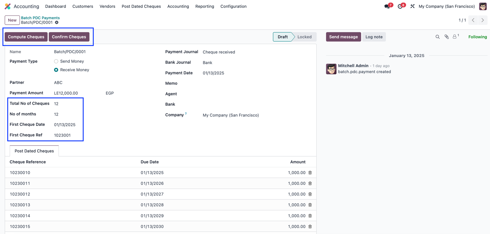
For Customer Cheques, the app automatically processes the following journal entries at each stage:
| Stage | Debit Account | Credit Account | Description |
|---|---|---|---|
| Cheque Received | Cheque Received | Accounts Receivable | Records cheques received from customers. |
| Cheque Under Collection | Cheques Under Collection | Cheque Received | Moves cheques to the collection stage. |
| Cheque Deposited | Bank | Cheques Under Collection | Updates accounts when cheques are cleared. |
| Cheque Bounced | Accounts Receivable | Cheques Under Collection | Reverses entries for bounced cheques. |
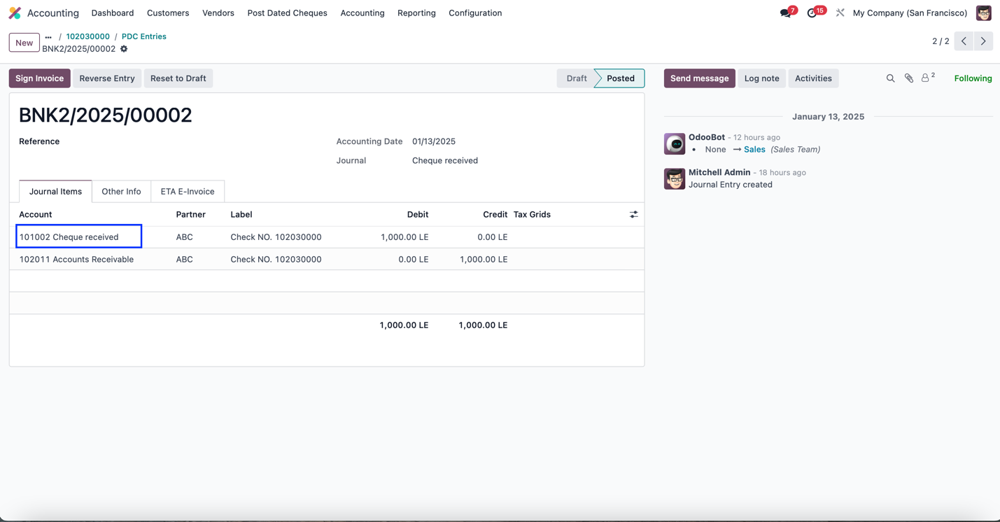
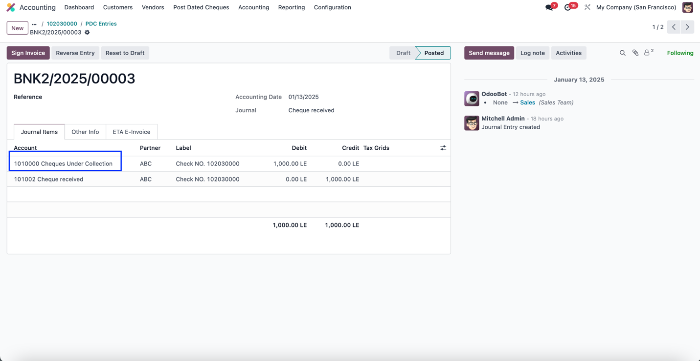
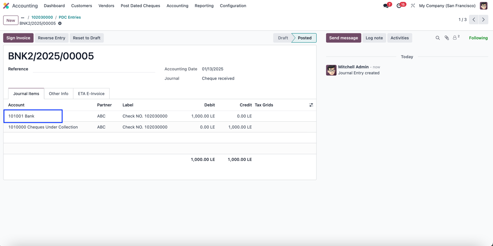
For Vendor Cheques, the app automatically processes the following journal entries at each stage:
| Stage | Debit Account | Credit Account | Description |
|---|---|---|---|
| Cheque Issued | Accounts Payable | Cheque Issued | Records outgoing cheques issued to vendors. |
| Cheque Cleared | Bank | Cheque Issued | Reflects the final payment when vendor cheques are cleared. |
| Cheque Returned | Accounts Payable | Bank | Reverses cleared cheques that are returned. |
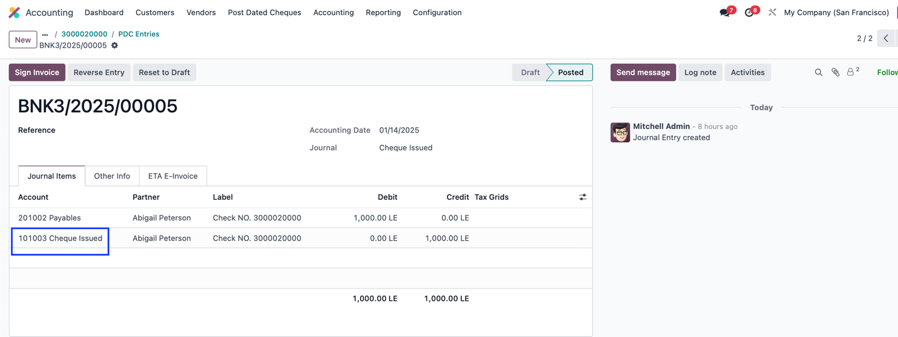
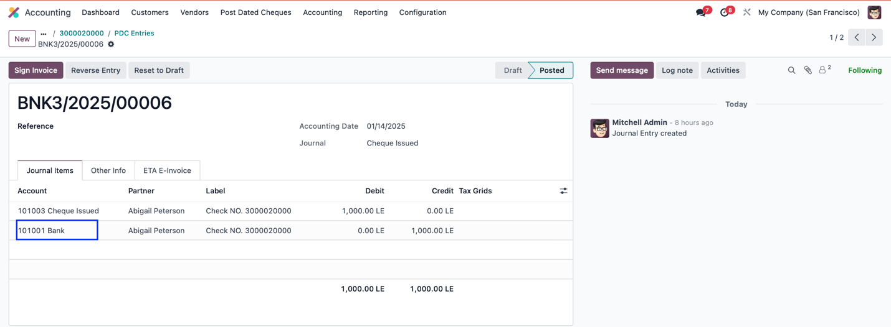
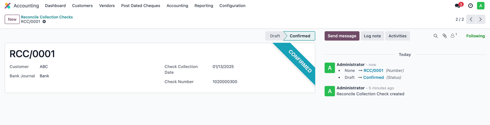
Not all PDC cheque management solutions are built the same. Qsys has developed the most comprehensive, automation-driven, and accounting-compliant Odoo app designed specifically to eliminate manual cheque handling errors, streamline reconciliation, and improve financial accuracy.
Unlike any other solution, our app allows users to automatically generate multiple post-dated cheques in just a few clicks. Simply enter the total payment amount, number of cheques, and intervals (e.g., monthly payments), and the app instantly calculates amounts, assigns due dates, and generates sequential cheque numbers.
Perfect for: real estate, lending institutions, and high-volume B2B transactions.
🚫 Competitors? Most require users to manually create cheques, leading to errors and inefficiencies.
We ensure that every financial entry is aligned with international accounting standards. The app automatically creates journal entries for each cheque stage, ensuring real-time updates in Odoo accounting and seamless reconciliation.
🚫 Competitors? Many apps lack proper journal entry automation, requiring manual adjustments.
Customer cheques can be registered directly from invoices, while vendor cheques are linked to vendor bills. The app automatically reconciles cheques with invoices and bills upon clearance.
🚫 Competitors? Most apps require manual intervention for reconciliation and do not handle bounced cheques efficiently.
Enjoy 100% automated cheque lifecycle management, reducing manual efforts and ensuring audit-ready records. The app supports multi-currency transactions for businesses operating in global markets.
🚫 Competitors? Some cheque management apps lack comprehensive automation, requiring manual data entry.
With interactive dashboards, quick access to cheque statuses, reports, and reconciliations, our app is designed for accountants, finance teams, and business owners.
🚫 Competitors? Many apps have outdated interfaces that require additional customizations, leading to a poor user experience.
✅ Save time, eliminate manual errors, and ensure financial compliance.
✅ Join businesses that trust our app for cheque tracking, automated reconciliation, and superior
financial control.
"Batch cheque creation has saved us countless hours. This app is a must-have!" – Finance Manager
"Seamless reconciliation and handling of bounced cheques make this a game-changer!" – Accountant
Upgrade your cheque management process with ease and precision.
Download Now